3 Simple Linear regression
3.1 Ordinary least squares
We have seen some introductory examples in Section 2.1.5.
Fuel consumption example, what is the `best fitting line’ to summarise the linear trend? \[y_i =\beta_{0} + \beta_{1}x_i + \epsilon_i.\]
The method of ordinary least squares chooses \(\beta_{0}\), \(\beta_{1}\) to minimise:
\[\begin{align*} S(\beta_{0}, \beta_{1}) & =\sum_{i=1}^{n}\epsilon_i^2 \\ & = \sum_{i=1}^{n}(y_i-\beta_0-\beta_1x_i)^2\\ \end{align*}\]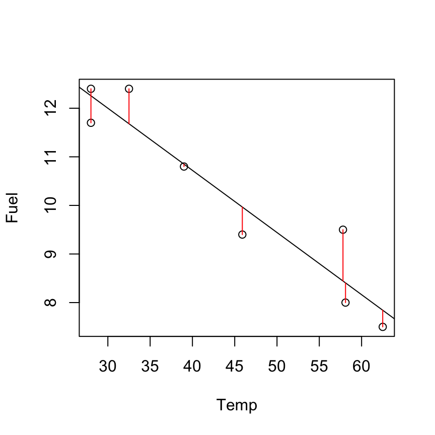
The least squares estimators \(\hat{\beta}_0\) and \(\hat{\beta}_1\) must satisfy: \(\frac{\delta S}{\delta \beta_0} = 0\) and \(\frac{\delta S}{\delta \beta_1} = 0\).
\[\begin{align*} \frac{\delta S}{\delta \beta_0} & = - 2\sum_{i=1}^{n} (y_i-\beta_0-\beta_1x_i) \\ \frac{\delta S}{\delta \beta_1} & = - 2\sum_{i=1}^{n} x_i(y_i-\beta_0-\beta_1x_i). \end{align*}\]Setting these to 0 at \(\hat{\beta}_0\) and \(\hat{\beta}_1\) gives:
\[\begin{align} \sum_{i=1}^{n} (y_i-\hat{\beta}_0-\hat{\beta}_1x_i) & =0 \tag{3.1}\\ \sum_{i=1}^{n} x_i(y_i-\hat{\beta}_0-\hat{\beta}_1x_i)& =0. \tag{3.2} \end{align}\]These equations ((3.1) and (3.2)) are called the normal equations. From (3.1):
\[\begin{align*} \sum_{i=1}^{n} y_i-n\hat{\beta}_0-\hat{\beta}_1\sum_{i=1}^{n}x_i & =0\\ \hat{\beta}_0& =\bar{y}-\hat{\beta}_1\bar{x}. \end{align*}\]Substitute into (3.2):
\[\begin{align*} \sum_{i=1}^{n}x_i( y_i-\bar{y}+\hat{\beta}_1\bar{x}-\hat{\beta}_1x_i) & =0\\ \sum_{i=1}^{n}x_i( y_i-\bar{y}) & =\hat{\beta}_1\sum_{i=1}^{n}x_i(x_i-\bar{x})\\ \hat{\beta}_1& = \frac{\sum_{i=1}^{n}x_i( y_i-\bar{y})}{\sum_{i=1}^{n}x_i(x_i-\bar{x})}\\ & =\frac{\sum_{i=1}^{n}(x_i-\bar{x})( y_i-\bar{y})}{\sum_{i=1}^{n}(x_i-\bar{x})^2}\\ & =\frac{S_{xy}}{S_{xx}}. \end{align*}\] Some notation: \[\begin{align*} S_{xx} & =\sum_{i=1}^{n}(x_{i} - \bar{x})^{2} =\sum_{i=1}^{n}x_{i}^{2} - n\bar{x}^2 \\ S_{yy} & =\sum_{i=1}^{n}(y_{i} - \bar{y})^{2} =\sum_{i=1}^{n}y_{i}^{2} - n\bar{y}^2 \\ S_{xy} & =\sum_{i=1}^{n}(x_{i} - \bar{x})(y_{i} - \bar{y}) = \sum_{i=1}^{n}x_{i}y_{i} - n\bar{x}\bar{y} \end{align*}\]So, the equation of the OLS fitted line is given by: \[\hat{y} =\hat{\beta}_{0} + \hat{\beta}_{1}x,\]
where \[\hat{\beta}_{1} = \frac{S_{xy}}{S_{xx}}\] and \[\hat{\beta}_{0} = \bar{y}-\hat{\beta}_1\bar{x}.\]
3.1.1 Residuals
The fitted value at each observation is: \[\hat{y}_i =\hat{\beta}_{0} + \hat{\beta}_{1}x_i\]
The residuals are computed as: \[e_i = y_i-\hat{y}_i\]
3.1.2 Some algebraic implications of the OLS fit
\(\sum_{i=1}^n e_i = \sum_{i=1}^n (y_i - \hat{y}_i) = 0\) (residuals sum to 0)
\(\sum_{i=1}^n x_i e_i = \sum_{i=1}^n x_i(y_i - \hat{y}_i) = 0\)
\(\sum_{i=1}^n y_i = \sum_{i=1}^n \hat{y}_i\) (from (3.1))
\(\bar{y} = \hat{\beta}_0+\hat{\beta}_1\bar{x}\) (OLS line always goes through the mean of the sample)
3.1.3 OLS Estimates for the Fuel Consumption Example
x <- Temp
y <- Fuel
n <- 8
cbind(x, y, xsq = x^2, ysq = y^2, xy = x * y)## x y xsq ysq xy
## [1,] 28.0 12.4 784.00 153.76 347.20
## [2,] 28.0 11.7 784.00 136.89 327.60
## [3,] 32.5 12.4 1056.25 153.76 403.00
## [4,] 39.0 10.8 1521.00 116.64 421.20
## [5,] 45.9 9.4 2106.81 88.36 431.46
## [6,] 57.8 9.5 3340.84 90.25 549.10
## [7,] 58.1 8.0 3375.61 64.00 464.80
## [8,] 62.5 7.5 3906.25 56.25 468.75sum(x)## [1] 351.8sum(y)## [1] 81.7mean(x)## [1] 43.975mean(y)## [1] 10.2125sum(x^2)## [1] 16874.76sum(y^2)## [1] 859.91sum(x * y)## [1] 3413.11Sxx <- sum(x^2) - n * mean(x)^2
Sxx## [1] 1404.355Syy <- sum(y^2) - n * mean(y)^2
Syy## [1] 25.54875Sxy <- sum(x * y) - n * mean(x) * mean(y)
Sxy## [1] -179.6475Calculate \(\hat{\beta}_{0}\) and \(\hat{\beta}_{1}\):
\[\begin{align*} \hat{\beta}_{1} & = \frac{S_{xy}}{S_{xx}} = \frac{\sum_{i=1}^{n}x_{i}y_{i} - n\bar{x}\bar{y}}{\sum_{i=1}^{n}x_{i}^{2} - n\bar{x}^{2}} \\ & =\frac{-179.65}{1404.355} = -0.128 \end{align*}\]\(\hat{\beta}_{0} = \bar{y} - \hat{\beta}_{1}\bar{x} = 10.212 - ( - 0.128)(43.98) =15.84\)
The equation of the fitted line is \(\hat{y}= 15.84 - 0.128 x\).
3.1.4 Interpretation of the fitted simple linear regression line: Parameter estimates
-0.128 is the estimated change in mean fuel use for a 1\(^oF\) increase in temperature.
In theory, 15.84 is the estimated mean fuel use at a temperature of 0\(^oF\).
However, we have no reason to believe this is a good estimate because our data contains no information about the fuel-temperature relationship below 28\(^oF\).
3.1.5 Predicting
The fitted line allows us to predict fuel use at any temperature within the range of the data.
For example, at \(x=30^oF\): \[\hat{y}_i = 15.84 - 0.128 \times 30 = 12.\] 12 units of fuel is the estimated fuel use at \(30^oF\).
E.g. at \(x=40\); \(\hat{y} = 10.721\), at \(x=50\); \(\hat{y} = 9.442\).

3.2 The formal simple linear regression model
The SLR model tries to capture two features:
- a linear trend and
fluctuations (scatter about that trend).
Because of random variations in experimental conditions we do not expect to get the same value of \(y\) even if we keep repeating the experiment at various fixed \(x\) values.
SLR model tries to model the scatter about the regression line. We will have to make some assumptions about the behaviour of these chance fluctuations.
3.2.1 Model
The SLR model is of the form:
\[y_{i} = \beta_{0} + \beta_{1}x_{i} + \epsilon_{i}, \hspace{0.5cm} \epsilon_{i} \sim N(0, \sigma^{2}), \hspace{0.5cm} i=1,...,n. \]
\(\beta_0\) and \(\beta_1\) are unknown parameters
\(y\) and \(\epsilon\) are random
\(x\) is assumed non-random
We use errors \(\epsilon_{i}\) to model the chance fluctuations about the regression line (i.e. the underlying true line).
So the SLR model assumes that these errors, i.e. vertical distances from the observed point to the regression line, are, on average, equal to zero. It also assumes that they are normally distributed.
Another assumption is that the \(\epsilon_{i}\) values are independent and identically distributed (IID).
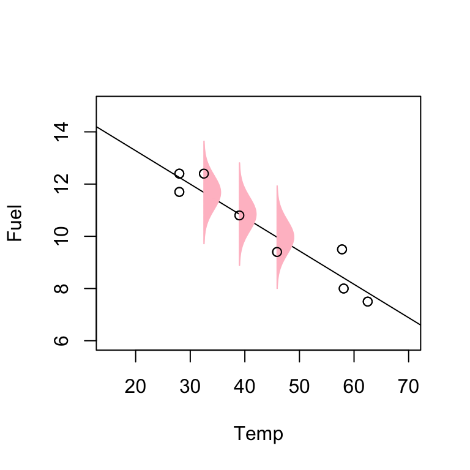
3.2.2 Assumptions
\(\mathbb{E}[\epsilon_{i}] = 0\), so \(\mathbb{E}[y_{i}] = \beta_0 + \beta_1x_i+ \mathbb{E}[\epsilon_i] = \beta_0 + \beta_1x_i\).
Var(\(\epsilon_i\)) = \(\sigma^2\). Equivalently Var(\(y_{i}\)) = \(\sigma^2\).
\(\epsilon_i\) are independent (therefore \(y_{i}\) also are).
\(\epsilon_i \sim N(0, \sigma^2)\). Equivalently \(y_i \sim N(\beta_0 + \beta_1x_i, \sigma^2)\).
NOTE: if \(x_i\) are random then the model says that \(\mathbb{E}[y_{i}|x_i] = \beta_0 + \beta_1x_i\) and Var(\(y_{i}|x_i\)) = \(\sigma^2\).
3.2.3 Estimation of \(\sigma^2\)
NOTE: \(\sigma^2\) = Var(\(\epsilon_i\))
The errors \(\epsilon_i\) are not observable, but the residuals, \(e_i\) should have similar properties.
We estimate \(\sigma^2\) by
\[\hat{\sigma}^2 = \frac{\sum_{i=1}^n e_i^2}{n-2}.\]
\(n-2\) is the degrees of freedom and \(\sum_{i=1}^n e_i^2\) is called the residual sum of squares, denoted \(\mbox{SSE}\).
3.2.4 Review of some probability results
Let \(U\), \(W\) and \(Z\) be three random variables:
\(\mathbb{E}[U]\) = mean of the distribution of \(U\)
Var \((U) = \mathbb{E}[U^2] - (\mathbb{E}[U])^2\)
Cov(\(U,U\)) = Var(\(U\))
Cov(\(U, W\)) = \(\mathbb{E}[UW] - \mathbb{E}[U]\mathbb{E}[W]\)
If \(U\) and \(W\) are uncorrelated or independent then Cov(\(U,W\)) = 0
\(\mbox{Corr}(U,W) = \frac{\mbox{Cov}(U,W)}{\sqrt{\mbox{Var}(U)\mbox{Var}(W)}}\)
For constants \(a\) and \(b\):
\(\mathbb{E}[aU+bW] = a\mathbb{E}[U] + b\mathbb{E}[W]\)
Var(\(aU \pm bW\)) = \(a^2\)Var[\(U\)] + \(b^2\)Var[\(W\)] \(\pm\) \(2ab\)Cov(\(U\),\(W\))
Cov(\(aU+bW, cZ\)) = \(ac\)Cov(\(U\),\(Z\)) + \(bc\)Cov(\(W\),\(Z\))
3.2.5 Properties of the estimates
When the model holds:
\(\hat{\beta}_1 \sim N\left(\beta_1,\frac{\sigma^2}{S_{xx}}\right)\)
\(\hat{\beta}_0 \sim N\left(\beta_0, \sigma^2\left(\frac{1}{n} + \frac{\bar{x}^2}{S_{xx}}\right)\right)\)
Cov\((\hat{\beta}_0, \hat{\beta}_1) = -\sigma^2\frac{\bar{x}}{S_{xx}}\)
\(\hat{y} \sim N\left(\beta_0 + \beta_1x, \sigma^2\left(\frac{1}{n}+ \frac{(x-\bar{x})^2}{S_{xx}}\right)\right)\)
\((n-2)\frac{\hat{\sigma}^2}{\sigma^2} \sim \chi^2_{(n-2)}\)
\(\mathbb{E}[\hat{\sigma}^2] = \sigma^2\)
Proof of (1):
First show that \(\mathbb{E}[\hat{\beta}_1] = \beta_1\).
\[\begin{align*} \hat{\beta}_1 & = \frac{S_{xy}}{S_{xx}} \\ & = \frac{\sum_{i=1}^{n}(x_i-\bar{x})( y_i-\bar{y})}{\sum_{i=1}^{n}(x_i-\bar{x})^2} \\ & = \frac{\sum_{i=1}^{n}(x_i-\bar{x})y_i}{\sum_{i=1}^{n}(x_i-\bar{x})^2} \\ & = \sum_{i = 1}^n a_iy_i \end{align*}\]where \(a_i\) depend only on \(x\) and are NOT random.
By linearity of expectation:
\[\begin{align*} \mathbb{E}[\hat{\beta}_1] & = \sum_{i = 1}^n a_i\mathbb{E}[y_i]\\ & = \sum_{i = 1}^n a_i (\beta_0+\beta_1x_i) \mbox{ (from the model assumptions)}\\ & = \beta_0\sum_{i = 1}^n a_i+\beta_1\sum_{i = 1}^n a_i x_i \end{align*}\]But
\[\sum_{i = 1}^n a_i = \frac{\sum_{i=1}^{n}(x_i-\bar{x})}{\sum_{i=1}^{n}(x_i-\bar{x})^2} = 0,\]
And
\[\begin{align*} \sum_{i = 1}^n a_i x_i & = \frac{\sum_{i=1}^{n}x_i(x_i-\bar{x})}{\sum_{i=1}^{n}(x_i-\bar{x})^2} \\ & = \frac{\sum_{i=1}^{n}x_i^2-n\bar{x}^2}{S_{xx}} \\ & = \frac{S_{xx}}{S_{xx}} = 1. \end{align*}\]So \(\mathbb{E}[\hat{\beta}_1] = \beta_1\) as required.
Second, show that Var(\(\hat{\beta}_1\)) = \(\frac{\sigma^2}{S_{xx}}\)
\[\begin{align*} \mbox{Var}(\hat{\beta}_1) & = \mbox{Var} \left( \sum_{i = 1}^n a_i y_i \right)\\ & = \sum_{i = 1}^n a_i^2 \mbox{Var}(y_i) \mbox{(since $y_i$s are independent)}\\ & = \sigma^2 \sum_{i = 1}^n a_i^2\\ & = \sigma^2 \sum_{i = 1}^n \left( \frac{x_i-\bar{x}}{\sum_{i=1}^{n}(x_i-\bar{x})^2} \right)^2\\ & = \sigma^2 \frac{\sum_{i = 1}^n (x_i-\bar{x})^2}{(\sum_{i=1}^{n}(x_i-\bar{x})^2)^2} \\ & = \sigma^2 \frac{S_{xx}}{(S_{xx})^2} \\ & = \frac{ \sigma^2}{S_{xx}} \mbox{ (as required)} \end{align*}\]Finally, the normality assumption follows as \(\hat{\beta}_1\) is a linear combination of normal random variables (\(y_i\)s).
Proof of (2):
First show that \(\mathbb{E}[\hat{\beta}_0] = \beta_0\).
\[\begin{align*} \mathbb{E}[\hat{\beta}_0] & = \mathbb{E}[\bar{y} - \hat{\beta}_1\bar{x}]\\ & = \mathbb{E}[\bar{y}] - \beta_1 \bar{x}\\ & = \frac{1}{n}\sum_{i = 1}^n\mathbb{E}[y_i] - \beta_1 \bar{x}\\ & = \frac{1}{n}\sum_{i = 1}^n (\beta_0+ \beta_1 x_i) - \beta_1 \bar{x}\\ & = \frac{1}{n}( n\beta_0 + \beta_1 \sum_{i = 1}^n x_i) - \beta_1 \bar{x}\\ & = \beta_0 + \beta_1 \bar{x} - \beta_1 \bar{x}\\ & = \beta_0 \mbox{ (as required)} \end{align*}\]Second, show that Var(\(\hat{\beta}_0\)) = \(\sigma^2\left(\frac{1}{n} + \frac{\bar{x}^2}{S_{xx}}\right)\)
\[\begin{align*} \mbox{Var}(\hat{\beta}_0) & =\mbox{Var}(\bar{y} - \hat{\beta}_1\bar{x}) \\ & = \mbox{Var}(\bar{y}) + \bar{x}^2 \mbox{Var}(\hat{\beta}_1) - 2\bar{x}\mbox{Cov}(\bar{y}, \hat{\beta}_1) \end{align*}\] \[\begin{align*} \mbox{Cov}(\bar{y}, \hat{\beta}_1) & =\mbox{Cov}\left( \frac{1}{n}\sum_{i = 1}^n y_i, \sum_{i = 1}^n a_iy_i \right)\\ & =\sum_{i = 1}^n \sum_{j = 1}^n \frac{1}{n} a_i\mbox{Cov}(y_i, y_j)\\ & =\frac{1}{n} \sum_{i = 1}^n \sum_{j = 1}^n a_i\mbox{Cov}(y_i, y_j)\\ & =\frac{1}{n} \sum_{i = 1}^n a_i\mbox{Cov}(y_i, y_i) \mbox{ (since $y_i$ are indep.)} \\ & =\frac{\sigma^2}{n} \sum_{i = 1}^n a_i\\ & = 0 \end{align*}\] \[\begin{align*} \mbox{Var}(\hat{\beta}_0) & = \mbox{Var}(\bar{y}) + \bar{x}^2 \mbox{Var}(\hat{\beta}_1) \\ & = \frac{1}{n^2} \sum_{i = 1}^n \mbox{Var}(y_i) + \bar{x}^2 \frac{\sigma^2}{S_{xx}}\\ & = \frac{1}{n^2} n\sigma^2 + \bar{x}^2 \frac{\sigma^2}{S_{xx}}\\ & = \sigma^2\left(\frac{1}{n} + \frac{\bar{x}^2}{S_{xx}}\right) \mbox{ (as required)} \end{align*}\]Finally, the normality assumption follows as \(\hat{\beta}_0\) is a linear combination of normal random variables (\(y_i\)s and \(\hat{\beta}_1\)).
Proof of (3):
\[\begin{align*} \mbox{Cov}(\hat{\beta}_0, \hat{\beta}_1) & =\mbox{Cov}(\bar{y} - \hat{\beta}_1\bar{x}, \hat{\beta}_1)\\ & =\mbox{Cov}(\bar{y}, \hat{\beta}_1) - \mbox{Cov}(\hat{\beta}_1\bar{x}, \hat{\beta}_1) \\ & = 0 - \bar{x}\mbox{Cov}(\hat{\beta}_1, \hat{\beta}_1) \\ & = -\bar{x} \frac{\sigma^2}{S_{xx}} \end{align*}\]Proof of (4):
First show that \(\mathbb{E}[\hat{y}] = \beta_0 + \beta_1 x\).
\[\begin{align*} \mathbb{E}[\hat{y}] & = \mathbb{E}[\hat{\beta}_0 + \hat{\beta}_1x]\\ & = \mathbb{E}[\hat{\beta}_0] + \mathbb{E}[\hat{\beta}_1]x\\ & = \beta_0 + \beta_1 x \mbox{ (as required)} \end{align*}\]Second, show that Var(\(\hat{y}\)) = \(\sigma^2\left(\frac{1}{n} + \frac{(x-\bar{x})^2}{S_{xx}}\right)\)
\[\begin{align*} \mbox{Var}(\hat{y}) & =\mbox{Var}(\hat{\beta}_0 + \hat{\beta}_1 x) \\ & =\mbox{Var}(\bar{y} - \hat{\beta}_1\bar{x} + \hat{\beta}_1 x) \\ & =\mbox{Var}(\bar{y} + \hat{\beta}_1(x - \bar{x})) \\ & =\mbox{Var}(\bar{y}) + (x - \bar{x})^2 \mbox{Var}(\hat{\beta}_1) + 2(x - \bar{x})\mbox{Cov}(\bar{y}, \hat{\beta}_1)\\ & =\frac{\sigma^2}{n} + (x - \bar{x})^2 \frac{\sigma^2}{S_{xx}}\\ & =\sigma^2\left(\frac{1}{n} + \frac{(x - \bar{x})^2}{S_{xx}}\right) \quad \mbox{ (as required)}. \end{align*}\]Finally, the normality assumption follows as \(\hat{y}\) is a linear combination of \(y_i\)s.
3.2.6 Special cases
At \(x = 0\), \(\hat{y} = \hat{\beta}_0\).
At \(x = x_i\), \(\hat{y} = \hat{y}_i\).
NOTE: \(h_{ii} = \left(\frac{1}{n} + \frac{(x_i - \bar{x})^2}{S_{xx}}\right)\) is a distance value (see later!)
3.3 Simple linear regression models in R and Minitab
3.3.1 Minitab
Regression Analysis: Fuel versus Temp
Analysis of Variance
Source DF Adj SS Adj MS F-Value P-Value
Regression 1 22.9808 22.9808 53.69 0.000
Temp 1 22.9808 22.9808 53.69 0.000
Error 6 2.5679 0.4280
Lack-of-Fit 5 2.3229 0.4646 1.90 0.500
Pure Error 1 0.2450 0.2450
Total 7 25.5488
Model Summary
S R-sq R-sq(adj) R-sq(pred)
0.654209 89.95% 88.27% 81.98%
Coefficients
Term Coef SE Coef T-Value P-Value VIF
Constant 15.838 0.802 19.75 0.000
Temp -0.1279 0.0175 -7.33 0.000 1.00
Regression Equation
Fuel = 15.838 -0.1279Temp
3.3.2 R
fit <- lm(Fuel~Temp)
summary(fit)##
## Call:
## lm(formula = Fuel ~ Temp)
##
## Residuals:
## Min 1Q Median 3Q Max
## -0.5663 -0.4432 -0.1958 0.2879 1.0560
##
## Coefficients:
## Estimate Std. Error t value Pr(>|t|)
## (Intercept) 15.83786 0.80177 19.754 1.09e-06 ***
## Temp -0.12792 0.01746 -7.328 0.00033 ***
## ---
## Signif. codes: 0 '***' 0.001 '**' 0.01 '*' 0.05 '.' 0.1 ' ' 1
##
## Residual standard error: 0.6542 on 6 degrees of freedom
## Multiple R-squared: 0.8995, Adjusted R-squared: 0.8827
## F-statistic: 53.69 on 1 and 6 DF, p-value: 0.0003301anova(fit)## Analysis of Variance Table
##
## Response: Fuel
## Df Sum Sq Mean Sq F value Pr(>F)
## Temp 1 22.9808 22.981 53.695 0.0003301 ***
## Residuals 6 2.5679 0.428
## ---
## Signif. codes: 0 '***' 0.001 '**' 0.01 '*' 0.05 '.' 0.1 ' ' 13.4 Statistical inference
3.4.1 R simulation: ParamInference.R
Reminder: the linear relationship \(\mathbb{E}[y_{i}] = \beta_{0} + \beta_{1}x_{i}\) is the underlying true line and the values of its parameters (intercept \(\beta_0\) and slope \(\beta_1\)) are unknown. We estimate the parameters with \(\hat{\beta}_0\) and \(\hat{\beta}_1\). These parameter estimates have sampling distributions.
#~~~~~~~~~~~~~~~ Simulation
#~~~~~~~~~~~~~~~ True model parameters:
beta_0 <- 1
beta_1 <- 2
sigma_sq <- 2
# Simulate a dataset:
n <- 100 #number of observations in the sample
x <- runif(n, -5, 5)
e <- rnorm(n, 0, sqrt(sigma_sq))
y <- beta_0 + x * beta_1 + e
plot(x, y)
abline(beta_0, beta_1, col = 2 ) # true model
points(mean(x), mean(y), col = 3)
fit <- lm(y ~ x) #fit the model
abline(coef(fit)[1], coef(fit)[2], col = 3)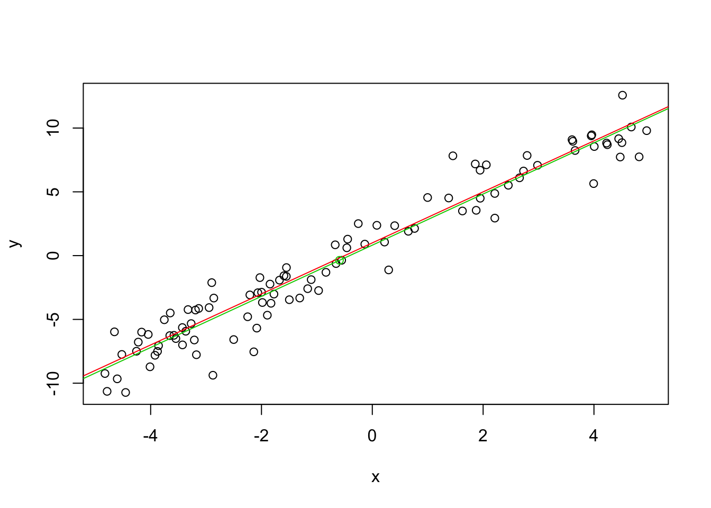
# estimated coefficients
coef(fit)## (Intercept) x
## 0.8221711 2.0056686s <- sqrt(sum(residuals(fit)^2)/(n-2))
s^2## [1] 2.28467# some useful calculations for dist of estimates
x_bar <- mean(x)
Sxx <- sum(x^2) - n * (x_bar^2)
var_beta_0 <- sigma_sq * (1/n + x_bar^2/Sxx)
var_beta_1 <- sigma_sq /Sxx
est_cov <- -sigma_sq * x_bar/Sxx # estimated covariance from one sample
se_fit <- sqrt(sigma_sq * (1/n + (x - x_bar)^2/Sxx))#~~~~~~~~~~~~~~~~~~~~ Repeat the simulation
N <- 500 #number of simulations
estimates <- matrix(0, N, 3) # to save param estimates
for (i in 1:N)
{
x <- runif(n, -5, 5)
e <- rnorm(n, 0, sqrt(sigma_sq))
y <- beta_0 + x * beta_1 + e
fit <- lm(y ~ x)
estimates[i, 1] <- coef(fit)[1]
estimates[i, 2] <- coef(fit)[2]
estimates[i, 3] <- anova(fit)[["Mean Sq"]][2] # sigamsq
}
plot(x,y)
for (i in 1:50)abline(estimates[i, 1], estimates[i, 2], col = "grey") # N is too many points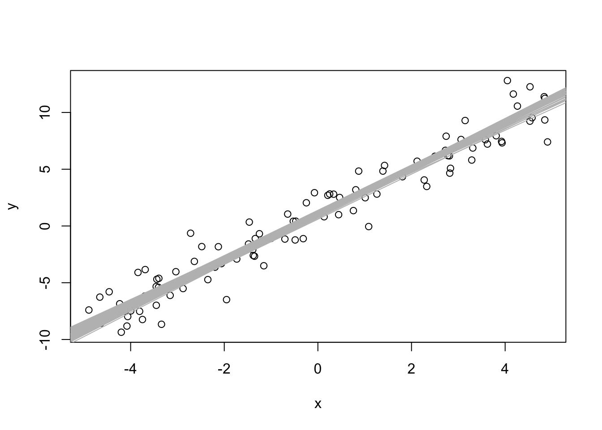
#~~~~~~~~~~~~~~ plot the estimates
#beta_0
hist(estimates[,1], breaks = 50, freq = FALSE, xlab = expression(hat(beta)[0]), main = expression(hat(beta)[0]))
curve(dnorm(x, beta_0, sqrt(var_beta_0) ), col = 2, add = TRUE)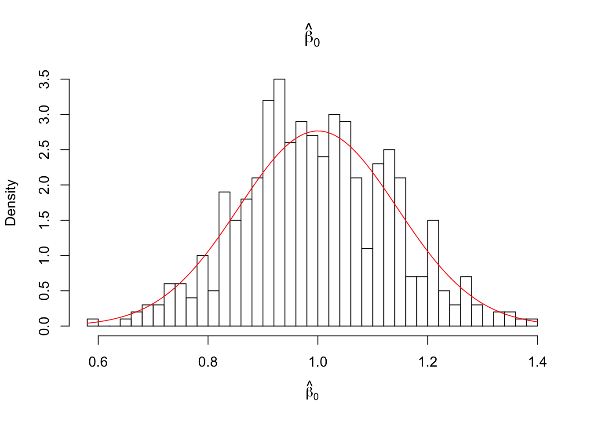
#beta_1
hist(estimates[,2], breaks = 50, freq = FALSE, xlab = expression(hat(beta)[1]), main = expression(hat(beta)[1]))
curve( dnorm(x, beta_1, sqrt(var_beta_1)) , col = 2, add = TRUE)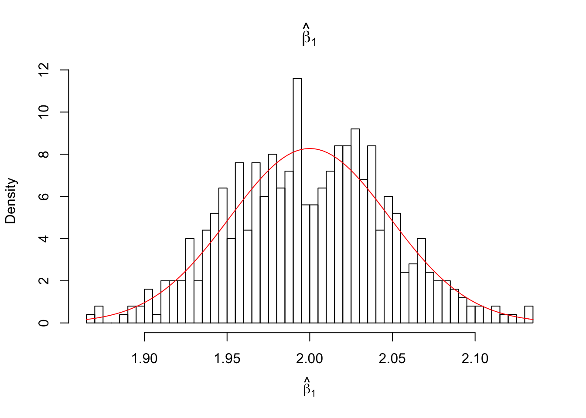
#sigma_sq
hist((n-2)/sigma_sq *estimates[,3], breaks = 50, freq = FALSE, xlab = expression(hat(sigma)^2), main = expression(hat(sigma)^2))
curve( dchisq(x, df = n-2), col = 2, add = TRUE)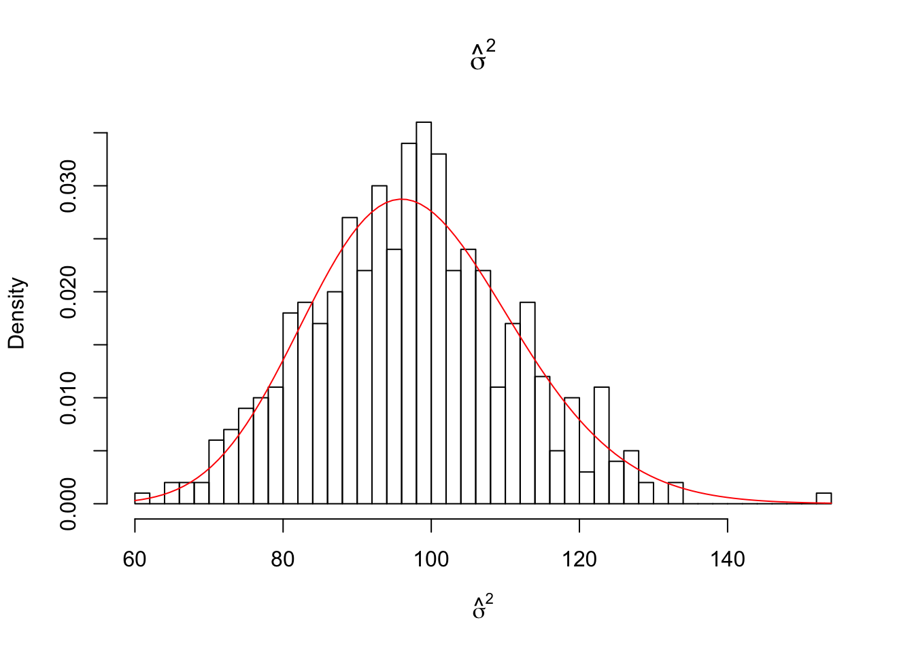
NOTE: superimposed curves are calculated from one (first) sample of the data and the known parameters. The distributions are from 3.2.5:
\(\hat{\beta}_1 \sim N\left(\beta_1,\frac{\sigma^2}{S_{xx}}\right)\)
\(\hat{\beta}_0 \sim N\left(\beta_0, \sigma^2\left(\frac{1}{n} + \frac{\bar{x}^2}{S_{xx}}\right)\right)\)
\((n-2)\frac{\hat{\sigma}^2}{\sigma^2} \sim \chi^2_{(n-2)}\)
3.4.2 Inference for \(\beta_1\)
3.4.2.1 Confidence Interval
\(\hat{\beta}_1\) estimates \(\beta_1\), for example the change in fuel use for a 1\(^oF\) increase in temperature.
We would like to construct a confidence interval for \(\beta_1\). This will give us an interval where we are confident the true \(\beta_1\) lies.
The key to obtaining a C.I. is the fact that:
\[\hat{\beta}_1 \sim N(\beta_1, \frac{\sigma^2}{S_{xx}}).\]
Equivalently
\[\frac{\hat{\beta}_{1} - \beta_{1}}{\sigma/\sqrt{S_{xx}}} \sim N(0,1).\]
And, when we replace \(\sigma\) by \(\hat{\sigma}\) we have:
\[\frac{\hat{\beta}_{1} - \beta_{1}}{\hat{\sigma}/\sqrt{S_{xx}}} \sim t_{n-2}.\]
The df is \(n-2\) because this is the df associated with the estimate of \(\sigma\).
In general, when:
\[\frac{\mbox{Est - parameter}}{\mbox{S.E.(Est)}} \sim \mbox{distribution}.\]
A C.I. for the parameter is given by:
\[\mbox{Est} \pm \mbox{(quantile from distribution)} \times \mbox{S.E.(Est)}.\]
A \((1-\alpha)\times 100\%\) confidence interval for \(\beta_{1}\):
\[\hat{\beta}_{1} \pm t_{n-2}(\alpha/2) \times \sqrt{\frac{\hat{\sigma}^2}{S_{xx}}}.\]
For the fuel use data, a \(95\%\) C.I. for \(\beta_1\) is:
\[\begin{align*} \hat{\beta}_1 &\pm t_6(0.025) \times \sqrt{\frac{\hat{\sigma}^2}{S_{xx}}}\\ & = -0.128 \pm 2.45 \times 0.018\\ & = (-0.171, -0.085) \end{align*}\]We are \(95\%\) confident that the average fuel use drop is between 0.085 and 0.171.
3.4.2.2 Hypothesis test
In some settings we may wish to test:
\(H_{0}: \beta_{1} = 0\) versus \(H_{A}: \beta_{1} \ne 0\).
The null hypothesis here is that \(\mathbb{E}[y] = \beta_0\) i.e. \(\mathbb{E}[y]\) is not linearly related to \(x\).
Under \(H_0\):
\[t_{obs} = \frac{\hat{\beta}_{1} - 0}{\hat{\sigma}/\sqrt{S_{xx}}} \sim t_{n-2}.\]
P-value = \(P[T_{n-2} \geq |t_{obs}|]\)
Reject \(H_0\) for small p-values, typically \(p< 0.05\).
In the fuel use example:
\[t_{obs} = \frac{-0.128-0}{0.018} = -7.33\]
and p-value \(< 0.001\), so we reject \(H_0\) and conclude that \(\beta_{1} \ne 0\).
We could also test \(H_0: \beta_1=b\) by computing:
\[\frac{\hat{\beta}_{1} - b}{\mbox{S.E}.(\hat{\beta}_{1})}.\]
3.4.3 Inference for \(\beta_0\)
A \(95\%\) C.I. for \(\beta_0\) is:
\[\hat{\beta}_{0} \pm t_{n-2}(\alpha/2) \times \mbox{S.E.}(\hat{\beta}_{0}).\]
Note: \(\mbox{S.E.}(\hat{\beta}_0) = \sqrt{\hat{\sigma}^2\left(\frac{1}{n} + \frac{\bar{x}^2}{S_{xx}}\right)}\)
For the fuel use data:
\[\begin{align*} & = 15.84 \pm 2.45 \times 0.8018\\ & = (13.88, 17.80) \end{align*}\]We can also test for a particular value of \(\beta_0\), e.g.
\(H_0: \beta_0 = 0\) vs. \(H_A: \beta_0 \neq 0\)
The null hypothesis here is that \(\mathbb{E}[y] = \beta_1 x\) i.e. the line passes through the origin.
The test statistic is
\[\frac{\hat{\beta}_{0} - \beta_0}{\mbox{S.E.}(\hat{\beta}_{0})} = 19.75.\]
for the fuel data.
P-value \(= 2P[T_6 \geq 19.75] <0.001.\)
Note: This is for illustration, in practice with this particular data we would not do this. Why?
3.4.4 Inference for mean response
Suppose we want to estimate \(\mu=\mathbb{E}[y]\) at a particular value of \(x\).
At \(x_0\) let:
\[\mu_0 = \mathbb{E}[y_0] = \beta_0 + \beta_1 x_0\]
We can estimate \(\mu_0\) by:
\[\hat{y}_0 = \hat{\beta}_0 + \hat{\beta}_1 x_0.\]
e.g. we estimate the mean fuel use at temperature \(50^oF\) by
\[\hat{y}_0 = \hat{\beta}_0 + \hat{\beta}_1 \times 50 =15.84-0.128 \times 50 =9.44.\]
A \(95\%\) C.I. for \(\mu_0\) is given by
\[\begin{align*} \mbox{Est} &\pm t_{n-2}(\alpha/2) \times \mbox{S.E.(Est)}\\ \hat{y}_0 &\pm t_{n-2}(\alpha/2) \times \mbox{S.E.}_{\mbox{fit}}(\hat{y}_0) \end{align*}\]where
\[\begin{align*} \mbox{S.E.}_{\mbox{fit}}(\hat{y}_0)& =\hat{\sigma}\sqrt{h_{00}}\\ & = \hat{\sigma}\sqrt{\frac{1}{n}+\frac{(x_0-\bar{x})^2}{S_{xx}}}\\ & = 0.65 \times \sqrt{0.15}=0.254 \end{align*}\]The \(95\%\) C.I. is
\[\begin{align*} & = 9.44 \pm 2.45 \times 0.254\\ & = (8.8, 10.1) \end{align*}\]This interval contains the true mean fuel use at \(50^oF\) with \(95\%\) confidence.
3.4.5 Inference for prediction
Suppose we want to predict the response at a particular value of \(x\).
At \(x_0\), let \(y_0\) be the unobserved response.
From our model:
\[y_0 =\mu_0 + \epsilon= \beta_0 + \beta_1 x_0 + \epsilon\]
and we estimate (predict) it by:
\[\hat{y}_0 = \hat{\beta}_0 + \hat{\beta}_1 x_0.\]
Note: estimation of a random variable is called prediction.
In our example, we predict that the fuel use at temp \(50^oF\) as:
\[\hat{y}_0 = 15.84-0.128\times 50=9.44\]
Note that the prediction of future response equals the estimate of the mean response, however the associated standard errors (and hence confidence intervals) are different.
Confidence intervals for random variables are called prediction intervals (PIs).
In our prediction of \(y_0\) by \(\hat{y}_0\) the prediction error \(y_0-\hat{y}_0\) is with variance:
\[\begin{align*} \mbox{Var}(y_0-\hat{y}_0)& = \mbox{Var}(y_0)+ \mbox{Var}(\hat{y}_0)\mbox{ (indep as $y_0$ is out of sample)}\\ & =\sigma^2 + \sigma^2\times h_{00} \\ & = \sigma^2(1+h_{00})\\ & = \sigma^2\left(1+\frac{1}{n}+\frac{(x_0-\bar{x})^2}{S_{xx}}\right) \end{align*}\]The \(\mbox{S.E.}\) of the prediction is then:
\[\mbox{S.E.}_{\mbox{pred}} (\hat{y}_0) = \hat{\sigma}\sqrt{1+\frac{1}{n}+\frac{(x_0-\bar{x})^2}{S_{xx}}}\]
The \(95\%\) prediction interval is
\[\hat{y}_0 \pm t_{n-2}(\alpha/2) \times \mbox{S.E.}_{\mbox{pred}} (\hat{y}_0)\]
For \(x_0\) = 50, \(\hat{y}_0 =9.442\):
\[\mbox{S.E.}_{\mbox{pred}}= \sqrt{1+0.15} \times 0.654 = 0.702\]
So the \(95\%\) P.I. is:
\[\begin{align*} & = 9.44 \pm 2.45 \times 0.702\\ & = (7.72, 11.16) \end{align*}\]We are \(95\%\) sure that the interval contains the actual fuel use on a week with temp = \(50^oF\).

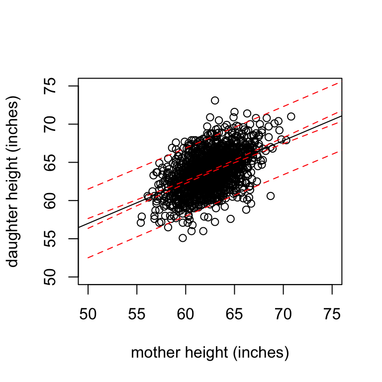
3.5 Analysis of variance (for s.l.r.)
The analysis of variance is a method for comparing the fit of two or more models to the same dataset. It is particularly useful in multiple regression.
3.5.1 ANOVA decomposition
\[\begin{align*} \mbox{data} & = \mbox{fit} + \mbox{residual} \\ y_i & = \hat{y}_i +e_i\\ y_i - \bar{y} & = \hat{y}_i - \bar{y} +e_i \\ \sum_{i = 1}^n ( y_i - \bar{y})^2 & =\sum_{i = 1}^n(\hat{y}_i - \bar{y} +e_i)^2\\ & =\sum_{i = 1}^n(\hat{y}_i - \bar{y})^2 +\sum_{i = 1}^ne_i^2 + 2\sum_{i = 1}^n (\hat{y}_i - \bar{y})e_i \end{align*}\]The last term is zero because (from normal equations):
\(\sum_{i = 1}^n\hat{y}_ie_i = 0\) and \(\sum_{i = 1}^ne_i = 0\).
The decomposition:
\[\sum_{i = 1}^n ( y_i - \bar{y})^2 =\sum_{i = 1}^n(\hat{y}_i - \bar{y})^2 +\sum_{i = 1}^ne_i^2\]
is called the ANOVA decomposition.
These calculations are summarised in the ANOVA table.
3.5.2 ANOVA table
In general, an ANOVA table is a method for partitioning variability in a response variable into what is explained by the model fitted and what is left over.
The exact form of the ANOVA table will depend on the model that has been fitted.
The hypothesis being tested by the model will also depend on the model that has been fitted.
An ANOVA table for the simple linear regression model:
| SOURCE | df | SS | MS | F |
|---|---|---|---|---|
| Regression | 1 | SSR | MSR = SSR/1 | MSR/MSE |
| Error | n-2 | SSE | MSE = SSE/(n-2) | |
| Total | n-1 | SST |
NOTE:
The total sum of squares, \(\mbox{SST} = \sum_{i=1}^{n}(y_{i} - \bar{y})^{2}\) is the sum of squares of \(y\) about the mean. The total sum of squares does not depend on \(x\). (NB: this is \(S_{yy}\))
The regression sum of squares, \(\mbox{SSR} = \sum_{i=1}^{n}(\hat{y}_{i} - \bar{y})^{2}\). Note that \(\hat{y}_{i}\) depends on \(x\).
The residual/error sum of squares, \(\mbox{SSE} = \sum_{i=1}^{n}e_{i}^{2} = \sum_{i=1}^{n}(y_{i} - \hat{y}_{i})^{2}\).
\(\mbox{SST} = \mbox{SSR} + \mbox{SSE}\).
The sums of squares have associated degrees of freedom (df).
MS = SS/df
The mean squared error \(\mbox{MSE}\) estimates \(\sigma^{2}\).
The coefficient of determination is: \[R^{2} = \frac{\mbox{SSR}}{\mbox{SST}} = 1 - \frac{\mbox{SSE}}{\mbox{SST}}.\]
\(R^{2}\) is always between 0 and 1 and it measures the proportion of variation in \(y\) that is explained by regression with \(x\).
3.5.3 Special cases
- \(R^{2}=1\), \(\mbox{SSR} = \mbox{SST}\), \(\mbox{SSE}\) = 0.
\(e_{i}=0\), \(i = 1, \dots,n\), data fall on a straight line.
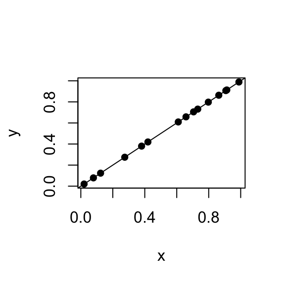
- \(R^{2}=0\), \(\mbox{SSR} = 0\), \(\mbox{SSE} = \mbox{SST}\).
\(\hat{y}_{i}=\bar{y}\), \(\hat{\beta}_1=0\).
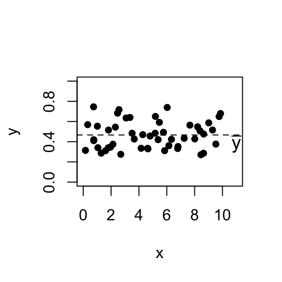
3.5.4 Does regression on x explain y?
In simple linear regression this amounts to testing:
\[\begin{align*} H_0&:& \beta_1 = 0\\ H_A&:& \beta_1 \ne 0 \end{align*}\]We can use a t-test for this, but there is an equivalent test based on the F distribution. As we will see later, F-tests have a wide range of applications.
If \(H_0\) holds, then \(\mbox{SSR}\) is small and \(\mbox{SSE}\) large. Therefore large values of \(\mbox{SSR}\) relative to \(\mbox{SSE}\) provide evidence against \(H_0\).
The F-statistic is:
\[F=\frac{\mbox{SSR}/df_R}{\mbox{SSE}/df_E}.\]
where
- \(df_R=1\) is the degrees of freedom of \(\mbox{SSR}\) and
- \(df_E=n-2\) is the degrees of freedom of \(\mbox{SSE}\).
Under \(H_0\),\(F \sim F_{1,n-2}\).
By dividing each SS by the \(df\) we put them on a common scale, so that if \(H_0\) is true:
\[\mbox{SSR}/1 \approx \mbox{SSE}/(n-2)\] and \[F_{obs}\approx 1.\]
Large values of \(F_{obs}\) provide evidence against \(H_0\).
P-value: \(P( F_{1,n-2} \geq F_{obs})\).
3.5.5 Notes on the ANOVA table
- \(\mathbb{E}[\mbox{MSR}] = \sigma^2 + \beta_1^2 S_{xx}\).
Proof:
\[\begin{align*} \mbox{MSR} & = \sum_{i = 1}^n (\hat{y}_i - \bar{y})^2/1\\ & = \sum_{i = 1}^n (\hat{\beta}_0 + \hat{\beta}_1x_i - \bar{y})^2\\ & = \sum_{i = 1}^n (\bar{y} - \hat{\beta}_1 \bar{x} + \hat{\beta}_1x_i - \bar{y})^2\\ & =\hat{\beta}_1^2\sum_{i = 1}^n (x_i - \bar{x})^2\\ & =\hat{\beta}_1^2 S_{xx} \end{align*}\] \[\begin{align*} \mathbb{E}[\mbox{MSR}] & = \mathbb{E}[\hat{\beta}_1^2 S_{xx}]\\ & =S_{xx} \mathbb{E}[\hat{\beta}_1^2]\\ & = S_{xx} \left(\mbox{Var}(\hat{\beta}_1) + \mathbb{E}[\hat{\beta}_1]^2 \right)\\ & = S_{xx} \left(\frac{\sigma^2}{S_{xx}} + \beta_1^2 \right)\\ & = \sigma^2 + \beta_1^2 S_{xx} \end{align*}\]- \(\mathbb{E}[\mbox{MSE}] = \sigma^2\).
Proof:
\[\begin{align*} \mbox{MSE} & = \frac{\sum_{i = 1}^n (y_i - \hat{y}_i)^2}{n-2}\\ & = \frac{\sum_{i = 1}^ne_i^2}{n-2} \end{align*}\] \[\begin{align*} \mathbb{E}[\mbox{MSE}] & = \frac{1}{n-2} \mathbb{E}\left[\sum_{i = 1}^ne_i^2 \right]\\ & = \frac{1}{n-2} \sum_{i = 1}^n\mathbb{E}[e_i^2]\\ & = \frac{1}{n-2} \sum_{i = 1}^n\left( \mbox{Var}(e_i) + \mathbb{E}[e_i]^2 \right) \end{align*}\]NOTE: \(\mathbb{E}[\epsilon_i] = 0\), \(\mbox{Var}(\epsilon_i) = \sigma^2\), but \(\mathbb{E}[e_i] = 0\), \(\mbox{Var}(e_i)= \sigma^2(1- h_{ii})\). We will revisit this later in the course.
\[\begin{align*} \mathbb{E}[\mbox{MSE}] & = \frac{1}{n-2} \sum_{i = 1}^n \left( \sigma^2( 1 - h_{ii}) + 0 \right)\\ & =\frac{1}{n-2} \sum_{i = 1}^n \sigma^2 \left(1-\left(\frac{1}{n} +\frac{(x_i - \bar{x})^2}{S_{xx}}\right)\right)\\ & =\frac{1}{n-2} \sum_{i = 1}^n \left(\sigma^2 - \frac{\sigma^2}{n} -\frac{\sigma^2 (x_i - \bar{x})^2}{S_{xx}}\right)\\ & =\frac{1}{n-2} \left(\sigma^2 n- \sigma^2 -\frac{\sigma^2 }{S_{xx}}\sum_{i = 1}^n(x_i - \bar{x})^2\right)\\ & = \frac{1}{n-2} \left((n-2) \sigma^2\right)\\ & =\sigma^2 \end{align*}\]Under the \(H_0\), \(\beta_1 = 0\) and then \(\mathbb{E}[\mbox{MSE}] = \mathbb{E}[\mbox{MSR}]\).
\(\mbox{MSE} = \hat{\sigma}^2\) can be computed using the formula:
\[\hat{\sigma}^2 = \frac{S_{yy} - \hat{\beta}_1^2S_{xx}}{n-2}.\]
3.6 Sample correlation
The relationship between \(X\) and \(Y\) can be examined using a scatterplot \((x_i, y_i)\).
Sample correlation measures the strength and direction of the linear association between \(X\) and \(Y\). It is defined as:
\[r = \frac{S_{xy}}{\sqrt{S_{xx}S_{yy}}}\]
\(r\) is the estimate of the population correlation (\(\rho\)) between \(X\) and \(Y\).
3.6.0.1 Connection between correlation and regression:
\(\hat{\beta}_1=\sqrt{\frac{\mbox{SST}}{S_{xx}}}r=\frac{s_y}{s_x}r\) where \(s_y\) and \(s_x\) are the standard deviations of the \(y_i\)’s and \(x_i\)’s. Note that if you change the role of \(X\) and \(Y\) the resulting regression line would have slope \(\frac{s_x}{s_y}r\).
\(r^2 =R^2\) the coefficient of determination.
In the SLR model variable \(x\) is treated as fixed and \(y\) and \(\epsilon\) are random. It is convenient to think of the predictor variable as fixed even if it israndom as we are interested in the behaviour of \(y\) at various fixed \(x\) values.
One can calculate \(r\) for any pair of variables (see next page), but correlation assumes that variables are bivariately normally distributed.
Whereas correlation treats both variables symmetrically, in regression, the exploratory variable is used to explain or predict the response variable.
Father and son heights (Galton data)
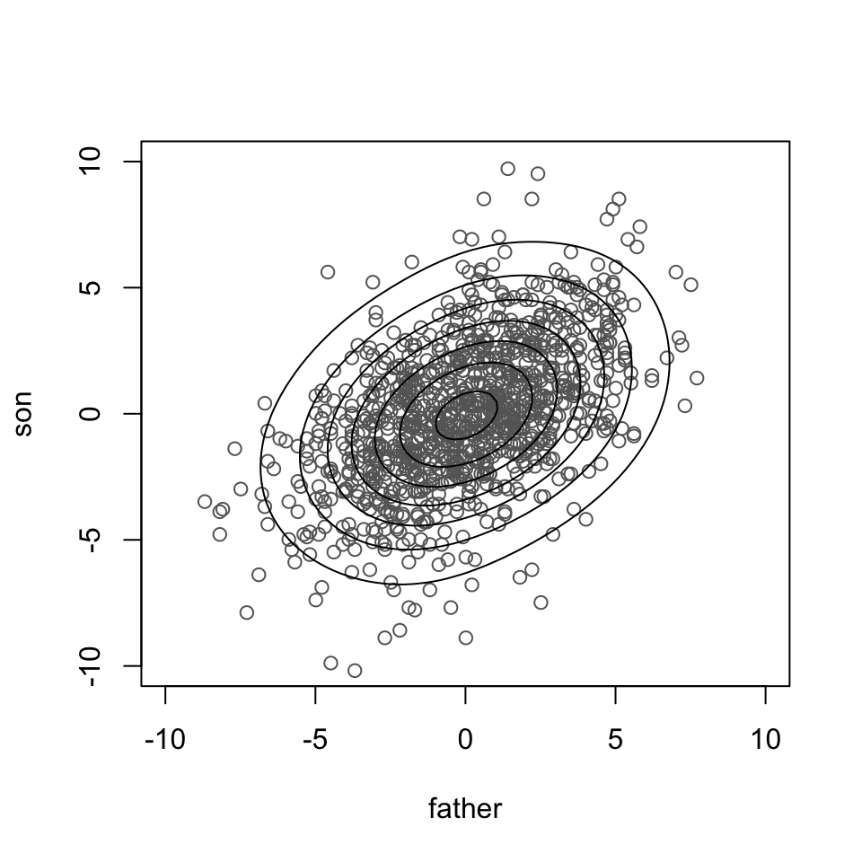
3.6.1 Examples of correlation
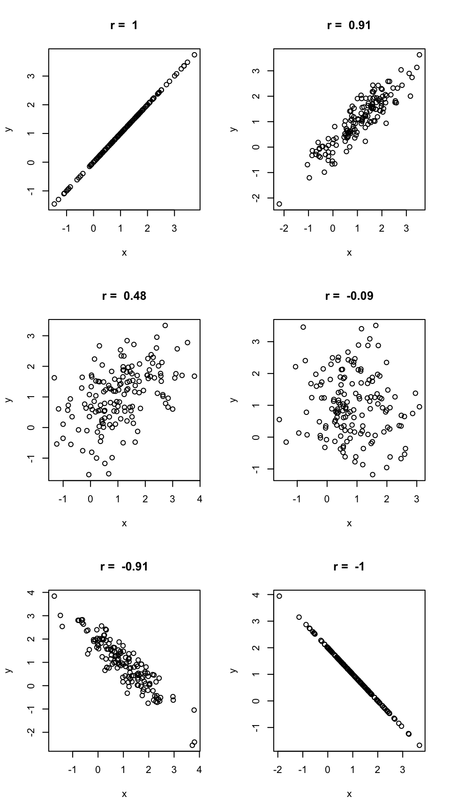
Anscombe data
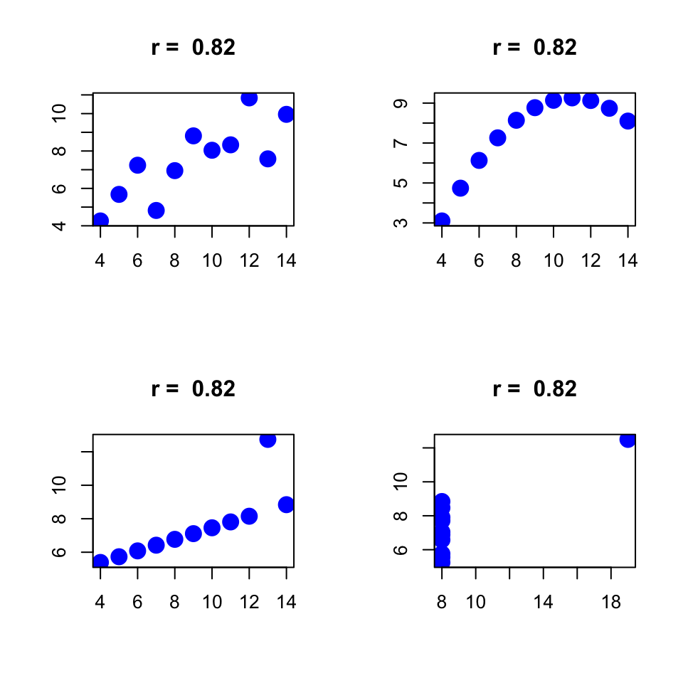
In all graphs below, correlation is \(r = -0.06\).
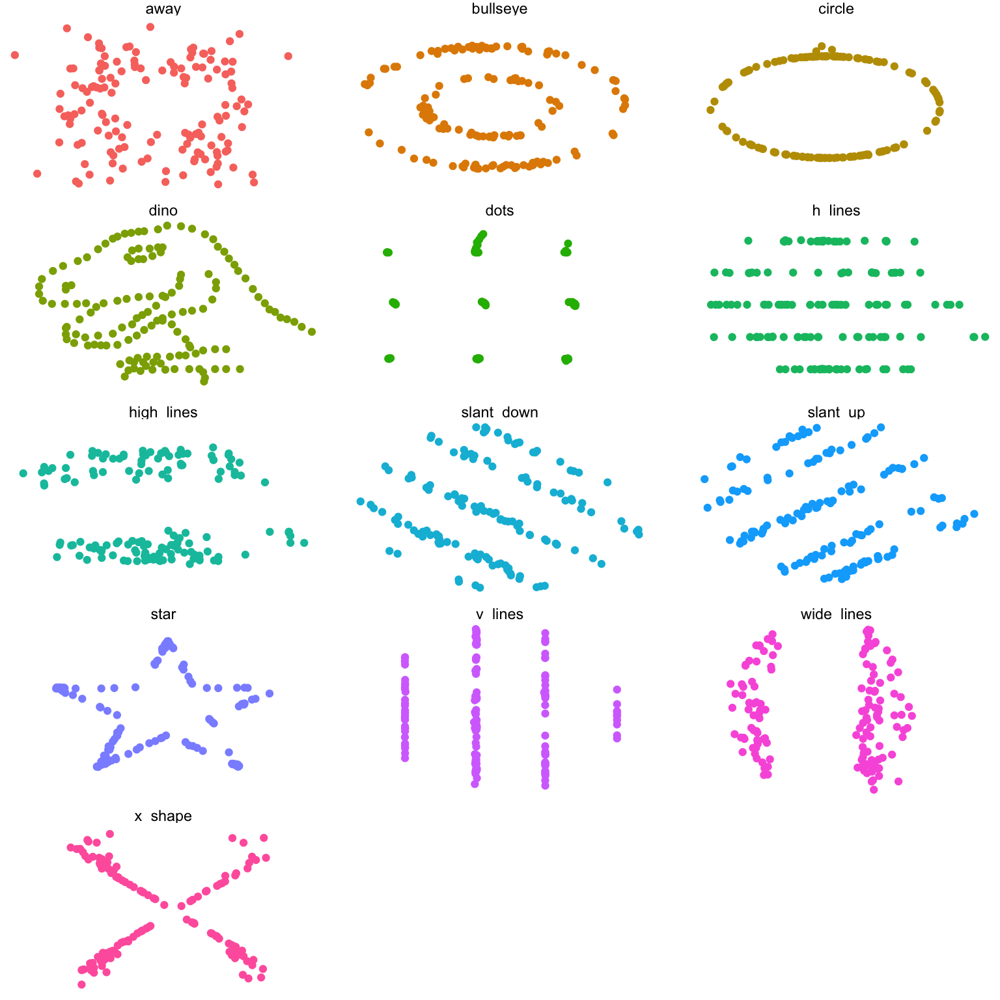
3.6.2 Comparison of the correlation and coefficient of determination for two data sets.
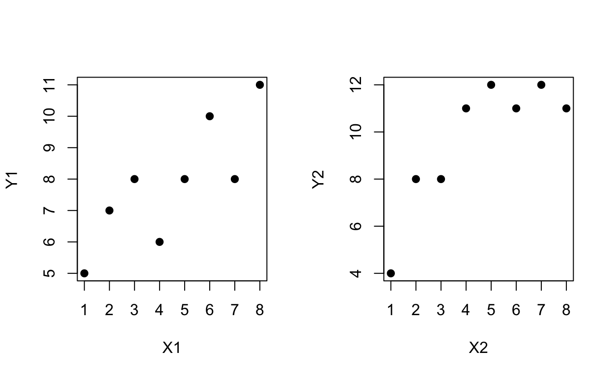
cor(X1,Y1)^2## [1] 0.6699889summary(lm(Y1 ~X1))[8]## $r.squared
## [1] 0.6699889cor(X2,Y2)^2## [1] 0.6895371summary(lm(Y2 ~X2))[8]## $r.squared
## [1] 0.68953713.7 Assessing the simple linear regression model assumptions
3.7.1 Assumptions
In the SLR model, we assume that \(y_{i} \sim\) N(\(\beta_{0} + \beta_{1}x_{i}, \sigma^{2}\)) and that the \(y_{i}\)’s are independent.
Equivalently, since \(\epsilon_{i} = y_{i} - \beta_{0} - \beta_{1}x_{i}\), the SLR model assumes that \(\epsilon_{i} \sim\) N(0, \(\sigma^{2}\)) and the \(\epsilon_{i}\)’s are independent and identically distributed.
We want to check the following:
There is a linear relationship, i.e. \(\mathbb{E}\)[\(y_{i}\)] = \(\beta_{0} + \beta_{1}x_{i}\). If the data do not follow a linear relationship then the simple linear regression model is not appropriate.
The \(\epsilon_{i}\)’s have a constant variance, i.e. Var(\(\epsilon_{i}\)) = \(\sigma^{2}\) for all \(i\). If there is not constant variance, the line will summarise the data okay but the parameter estimate standard errors, estimates of \(\sigma\) etc, are all based on incorrect assumptions.
The \(\epsilon_{i}\)’s are independent.
The \(\epsilon_{i}\)’s are normally distributed (with mean 0).
3.7.2 Violations and consequences
- Linearity:
- A straight linear relationship may be inadequate.
- A straight linear relationship may only be appropriate for most of the data.
- When linearity is violated least squares estimates can be biased and standard errors may be inaccurate.
- Constant variance:
- When the variance is not constant least squares estimate are unbiased but standard errors are inaccurate.
- Independence:
- When there is a lack of independence least squares estimates are unbiased but standard errors are seriously affected.
- Normality:
- Violations of normality do not have much impact on estimates and standard errors.
- Tests and C.I.’s are not usually seriously affected because of the C.L.T.
3.7.3 Graphical tools for assessment
- Plot of \(y_i\) versus \(x_i\). If satisfactory use simple linear regression.
Sometimes the patterns in the plot of \(y_i\) versus \(x_i\) are difficult to detect because of the total variability of the response variable is much larger than the variability around the regression line. Scatterplots of residuals vs fits are better at finding patterns because the linear component of the variation in the responses has been removed, leaving a clearer picture about curvature and spread. The plot alerts the user of nonlinearity, non-constant variance and the presence of outliers.
- Plot of \(e_i\) versus \(\hat{y}_i\) (or \(x_i\)).
- If satisfactory use simple linear regression.
- If linearity is violated but \(\mathbb{E}[y]\) is monotonic in \(x\) and \(\mbox{Var}(y)\) is constant, try transforming \(x\) and then use simple linear regression.
- If linearity is violated and \(\mathbb{E}[y]\) is not monotonic, try quadratic regression \(\mathbb{E}[y] = \beta_0+\beta_1 x+\beta_2 x^2\) (we will look at this later).
- If linearity is violated and \(\mbox{Var}(y)\) increases with \(\mathbb{E}[y]\), try transforming y and then use simple linear regression.
- If the distribution of \(y\) about \(\mathbb{E}[y]\) is skewed, i.e. non-normal, then use simple linear regression but report skewness.
- If linearity is not violated but \(\mbox{Var}(y)\) increases with \(\mathbb{E}[y]\), use weighted regression (we will look at this later).
- Normal probability plot
The model assumes normality of \(y\) about \(\mathbb{E}[y]\), or, equivalently, normality of \(\epsilon\).
The residuals \(e_i\) approximate \(\epsilon\) and should therefore have a normal distribution.
The normal probability (quantile) plot is a plot of \(z_i\) versus \(e_i\), where \(z_i\) are quantiles from the standard normal distribution.
This plot should roughly follow a straight line pattern.
- Residuals vs. time order
If the data are collected over time, serial correlation or a general time trend may occur.
A plot of \(e_i\) vs. \(t_i\) (time of the i\(^{th}\) observation) may be examined for patterns.
Everytime you use SLR you should also draw graphs 1) to 3). Also plot 4) when appropriate.
3.7.4 Cigarette Data
FDA data on cigarettes, response is carbon monoxide, predictor is nicotine. Data from McIntyre (1994).

summary(fit)##
## Call:
## lm(formula = carbon.monoxide ~ nicotine)
##
## Residuals:
## Min 1Q Median 3Q Max
## -3.3273 -1.2228 0.2304 1.2700 3.9357
##
## Coefficients:
## Estimate Std. Error t value Pr(>|t|)
## (Intercept) 1.6647 0.9936 1.675 0.107
## nicotine 12.3954 1.0542 11.759 3.31e-11 ***
## ---
## Signif. codes: 0 '***' 0.001 '**' 0.01 '*' 0.05 '.' 0.1 ' ' 1
##
## Residual standard error: 1.828 on 23 degrees of freedom
## Multiple R-squared: 0.8574, Adjusted R-squared: 0.8512
## F-statistic: 138.3 on 1 and 23 DF, p-value: 3.312e-11#studres(fit)To assess the fit construct residual plots

Plot 1: residuals increasing with the fit, non constant variance.
Plot 2: no indication that the assumption of Normality is unreasonable.
There are 3 unusual observations: 3, 19, 25. Obs 3 has a large negative residual. It is the point on the upper right of the fitted line plot. It is a high influence point, meaning it has a big effect on the fitted line obtained. Obs 19 and 25 have large positive residuals.
We could attempt to improve the fit, refit the model without observation 3.

Diagnostic plots:
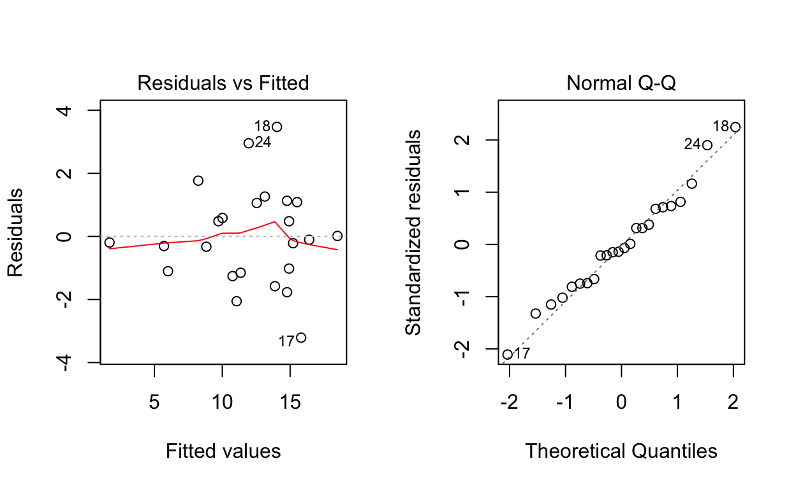
Plot 1: no linear pattern, but some hint of non-constant variance.
3.7.4.1 Transformations:
How can we pick the best transformation?
- Examine the fitted line plot: linearity, constant variance.
- Examine the residual vs fit plot: no relationship, constant variance, no outliers.
- Check the normality of residuals.
- Check for sensitivity: whether fit would change substantially if extreme points are removed.
- One can also compare \(R^2\) as long as the \(y\) values are on the same scale. Furthermore, \(R^2\) doesn’t follow a distribution, so we can’t compare \(R^2\) in two models and know that one is meaningfully better.
Note: interpretation changes after transformations.
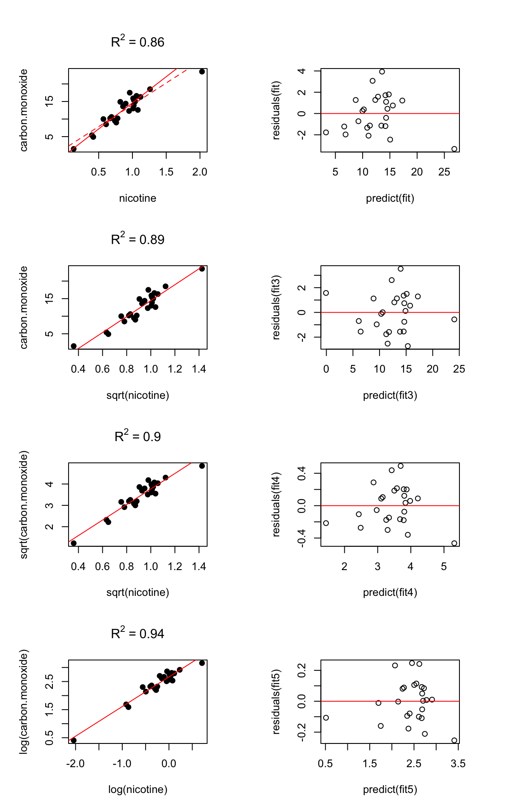
- Row 1: delete outlier
- Row 2: use a square root transformation for the predictor. This diminishes the influence of the outlier. The residual plot hints at a small amount of bias.
- Row 3: take square root transformations of both the response and the predictor.
- Row 4: take log transformations of both the response and the predictor.
3.8 A note on the Galton paradox
3.8.1 The Galton paradox
Sons are on average taller than their fathers (by 1 inch approx)

apply(father.son, 2, mean)## father son
## 67.68683 68.68423Taller than average fathers have taller than average sons. Regression towards the mean: although the above is true, for these tall people, the son’s height was on average less than the father’s.

The suggestion is that each generation would have offspring more near average than the previous generation and that over many generations the offspring would be of uniform heigth. However, the observations showed the sons as variable as the fathers.
apply(father.son, 2, sd)## father son
## 2.745827 2.816194An apparent paradox?
3.8.2 Two regressions
Regressing \(y\) on \(x\), treats \(x\) variable as fixed and only vertical distances are minimized. Howevever, regressing \(x\) on \(y\), i.e. trying to predict the fathers’ heights from their sons’ treats the sons’ heights \(y\) as fixed and the least squares criterion minimizes the horizontal distances.
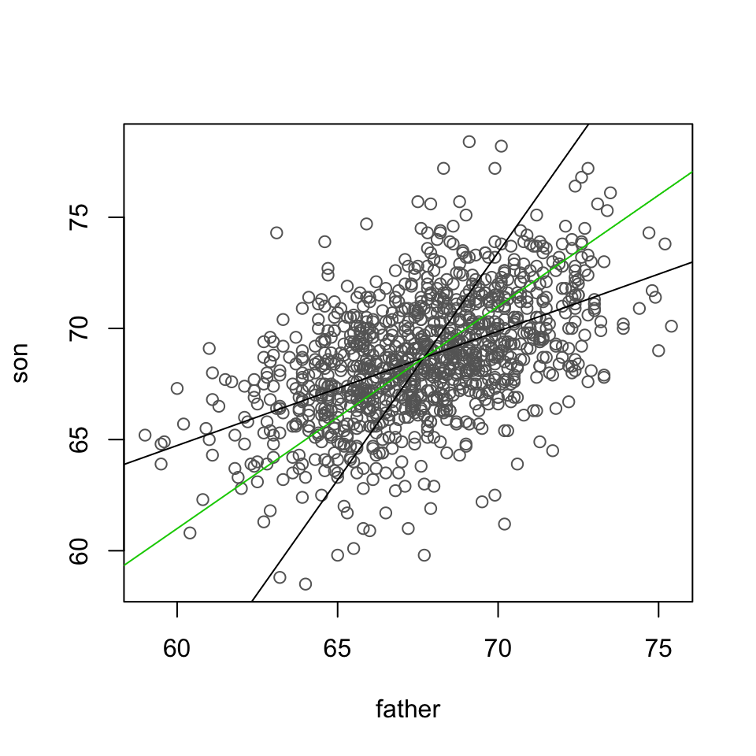
3.8.3 Regression vs orthogonal regression

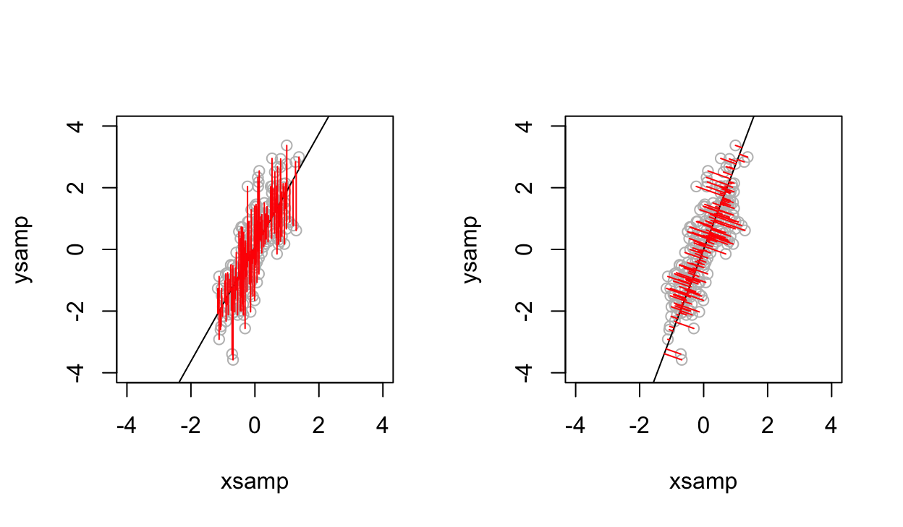
References
McIntyre, Lauren. 1994. “Using Cigarette Data for an Introduction to Multiple Regression.” Journal of Statistics Education 2 (1). Taylor & Francis: null. doi:10.1080/10691898.1994.11910468.